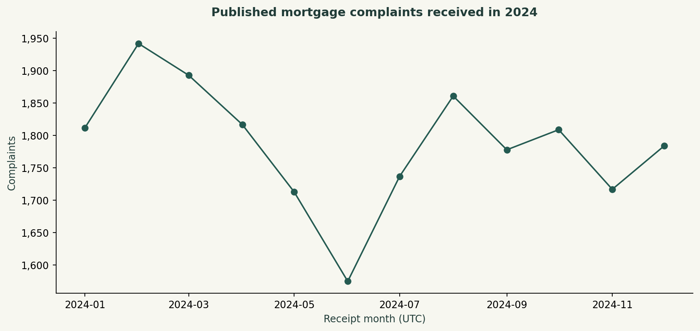
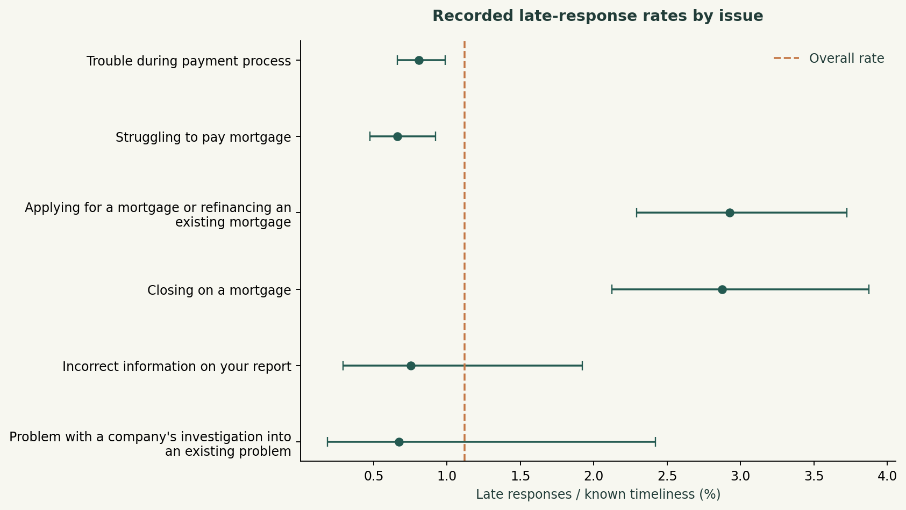
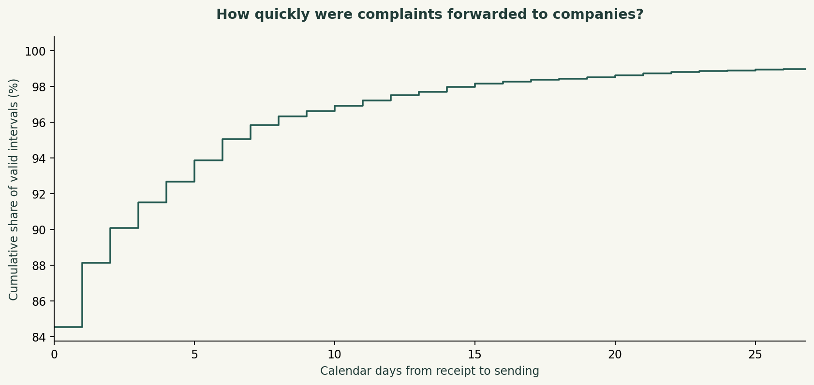

DANIEL UMEADI / SQL + PYTHON
Mortgage complaint operations
CFPB public complaints · 2024 receipt cohort · SQL workload analysis and Python rate uncertainty
Decision to support
Prioritize complaint-process reviews using workload concentration and recorded response timeliness. Keep forwarding delays separate from company resolution time.
Findings
21,438 mortgage complaints remain after the local 2024 receipt-date filter. The two largest issues account for 78.8% of workload. The largest issue is "Trouble during payment process" (11,743 records). There are 240 late-response labels among 21,438 known labels (1.12%). 2024-02 has the largest monthly count at 1,942.
Method
The pipeline validates complaint IDs, enforces the local date boundary and joins an issue dimension without multiplying rows. SQL computes monthly workload, issue shares, channel mix and calendar-day forwarding intervals. Python adds Wilson intervals to show how small denominators affect observed rates.
Recommended review
Review the highest-volume issue workflows first, then inspect issues whose recorded late-response rate is high enough to warrant a case review. Compare channels and sub-products before attributing differences to process quality. Monitor monthly counts and rates separately, with explicit owners for any follow-up.
Interpretation limits
These are complaints published by the CFPB, not a representative sample of mortgage customers or verified findings of wrongdoing. Volumes are not market-share-adjusted risk. Timely response does not mean successful resolution. Receipt-to-sending time measures forwarding, not company response duration. Wilson intervals describe binomial uncertainty under an independence model; they do not correct selection bias, company clustering or multiple comparisons. Records were retrieved in October 2026 and reflect the then-current historical snapshot. The API returned January 2025 rows, which the SQL excludes.




Response categories
| response | complaints |
|---|---|
| Closed with explanation | 20321 |
| Closed with non-monetary relief | 595 |
| Closed with monetary relief | 460 |
| Untimely response | 62 |
Issue denominators
| issue | complaints | known_timeliness | late_count |
|---|---|---|---|
| Trouble during payment process | 11743 | 11743 | 95.000 |
| Struggling to pay mortgage | 5142 | 5142 | 34.000 |
| Applying for a mortgage or refinancing an existing mortgage | 2154 | 2154 | 63.000 |
| Closing on a mortgage | 1427 | 1427 | 41.000 |
| Incorrect information on your report | 531 | 531 | 4.000 |
| Problem with a company's investigation into an existing problem | 297 | 297 | 2.000 |
| Improper use of your report | 97 | 97 | 1.000 |
| Credit monitoring or identity theft protection services | 30 | 30 | 0.000 |
| Unable to get your credit report or credit score | 11 | 11 | 0.000 |
| Problem with fraud alerts or security freezes | 6 | 6 | 0.000 |